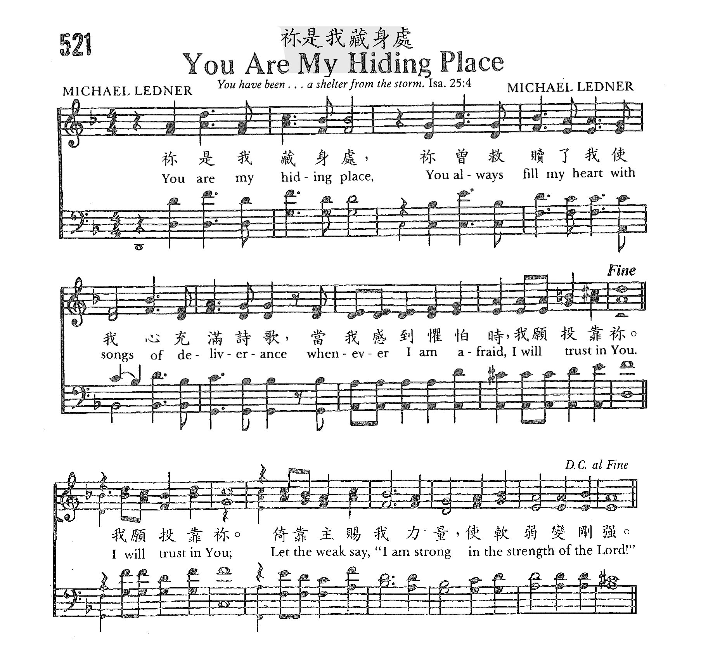

0412 You Are My Hiding Place _Michael Ledner
●
你是我藏身處
You are my hiding place
Author: Michael Ledner
Tune: HIDING PLACE (Ledner)
|
【你是我藏身處】
詩集：美樂頌，96 |
You are my hiding place,
You always fills my heart with songs of deliverance,
Whenever I am afraid I will trust in You, I will trust in You,
let the weak say, "I am strong in the strength of the Lord." |
你是我藏身處，你必以得救的樂歌，
四面環繞我，每當我心懼怕時，
我要倚靠你，我要倚靠你，
讓軟弱的人，說：我在主裡，已剛強。 |
https://www.zanmeishige.com/tab/26093.html?songbook=1&index=521

|
| |
|
https://hymnary.org/person/Ledner_M
NIL
Michael Ledner (1)
http://hishymnhistory.blogspot.com/2012/10/you-are-my-hiding-place.html
The author, Michael Ledner, composed "You Are My Hiding Place" at the age of
27 when he was going through a painful period in his life, a period of
separation from his wife. He shared the song with several friends, made a
recording of it, and set it aside. Nine months later he shared the song with a
group while they were serving at a kibbutz (communal settlement) in Israel.
These friends took the song back with them to California, and after it was sung
there, Michael was contacted by Maranantha! Music who wished to record "You Are
My Hiding Place."
BIBLE VERSES:
"You are my hiding place; you will protect me from trouble and surround me with
songs of deliverance." -- Psalm 32:7 (NIV)
你是我藏身之處，你必保佑我脫離苦難，以得救的樂歌四面環繞我。（細拉）
"When I am afraid, I will trust in you." -- Psalm 56:3 (NIV)
我懼怕的時候要倚靠你。
"But he said to me, 'My grace is sufficient for you, for my power is made
perfect in weakness.' Therefore, I will boast all the more gladly about my
weaknesses, so that Christ's power may rest on me. That is why, for Christ's
sake, I delight in weaknesses, in insults, in hardships, in persecutions, in
difficulties. For when I am weak, I am strong." -- 2 Corinthians 12:9-10 (NIV)
但他對我說：「我的恩典是夠你用的，因為我的大能在軟弱中得以完全。」因此，我反而極其樂意地誇耀我的那些軟弱，好讓基督的能力遮蓋在我身上。
所以，為了基督的緣故，我在那些軟弱中、凌辱中、艱難中、在逼迫和困苦中，都感到喜悅；因為我什麼時候軟弱，什麼時候就剛強了。

https://www.baptist.org.hk/lesson_book/201802.php
【詩三十二7】「你是我藏身之處，你必保佑我脫離苦難，以得救的樂歌四面環繞我。細拉」
四面環繞: 指“圍繞籠罩”,意味因神的保守,頌贊自然溢出,人被喜樂之歌包圍。 ――《聖經精讀本》
大衛第一個反應，是與人分享他的發現（6節）。現在他再度轉向神，而這時他似乎察覺，周圍有一群興高采烈的敬拜者圍著他──因為不需要像 RSV小字的作法，把得救的歡呼（或大聲歡唱，和合：樂歌）刪除：在希伯來經文中，這字放得很妥當。──《丁道爾聖經註釋》
https://rec.music.christian.narkive.com/MjXU0DXt/req-the-story-about-you-are-my-hiding-place
Yann,
I wrote "You Are My Hiding Place" in 1980 and it was published 1981 by Maranatha!
Music. I wrote it because I like to write music and use Scripture - especially
the Psalms. It was January, 1980. I was playing guitar on my bed with open Bible
in the Psalms. I wrote lots of "songs of deliverance" at that time while I was
going through a divorce. I'm happily remarried with 2 children and 7 awesome
grandkids and I'm still writing songs.
About the Israel connection - about a year after I wrote my song I was living in
Israel for a short time, There was fighting going on at that time in Northern
Israel but I was in Southern Israel. The song seemed to bring comfort to some of
my friends that were up North while they were in the shelters and listening to
the bombs going off in the background. While in Israel, Maranatha! Music
contacted me and asked to publish the song. Regarding the song "Phantom Of The
Opera" which Andrew Lloyd Weber wrote in 1985, whether or not he stole the
melody, consciously or subconsciously, or whether or not it was just a
coincidence that, years after I wrote my song, he ended up writing his song
using the same exact 9 first notes of the song (and same exact chord pattern for
those 9 notes), I do not know. If he did and is reading this, he should know
that I have no intent to sue him for copyright infringement - though he ought to
make some kind of amends nevertheless (my email is ***@yahoo.com).
George Harrison got sued for unintentionally stealing the melody and chords from
"He's So Fine" (by the Chiffons) when he published "My Sweet Lord." Anyway, the
main thing for me is that people would draw close to the Lord as they hear
and/or sing the song. I do all things for His pleasure (2 Corinthians 5:9,10).
By the way, I just noticed that your post is dated February, 2002 and it's only
14+ years later.
Blessings!
Michael Ledner 6/20/16
https://ocbf.ca/2019/psalm119o/
ס Samek（第15段）
113心懷二意的人為我所恨，但祢的律法為我所愛。
114祢是我藏身之處，又是我的盾牌，我甚仰望祢的話語。
115作惡的人哪，祢們離開我吧，我好遵守我神的命令。
116求祢照祢的話扶持我，使我存活，也不叫我因失望而害羞。
117求祢扶持我，我便得救，時常看重祢的律例。
118凡偏離祢律例的人，祢都輕棄他們，因為他們的詭詐必歸虛空。
119凡地上的惡人，祢除掉他，好像除掉渣滓，因此我愛祢的法度。
120我因懼怕祢，肉就發抖，我也怕祢的判語。
提起藏身之處，你可記得那位頂頂有名的大先知以利亞？在以色列最污名昭彰的亞哈王和耶洗別王后任期時，所有的百姓都跟著他們去拜偶像巴力和亞舍拉，神卻興起以利亞去對抗惡王和王后。以利亞最著名的事蹟就是迦密山上，一個人和450個巴力先知、400個亞舍拉的先知比賽，看看誰所敬拜的是真神。
當850個拜巴力和亞舍拉的先知們又唱又跳，使盡各種法寶，卻始終喚不醒他們所拜的“神”來悅納他們的獻祭時，他們終於累得倒下來了。輪到以利亞上場，一個禱告，神就從天上降火燒盡祭壇上的供物、木柴、石頭、塵土，又燒乾溝裡的水。以利亞有效地證明了誰是真神，他帶領以色列人抓住巴力的先知到河邊，全部殺了。神又降下大雨解除以色列的乾旱，以利亞在雨中奔跑，竟奔在亞哈王的馬車前面。那一天，以利亞何等威風！
就在以利亞認為他可以喚醒亞哈和以色列眾民離棄偶像，歸向耶和華神時，王后耶洗別派人來通知以利亞，第二天必取他的命。好像一盆冰水從頭澆下，他立刻往南逃命。從耶路撒冷到別是巴大約有80公里，從耶斯列到耶路撒冷的距離約有131公里。當以利亞聽到耶洗別要殺他之後，他從耶斯列一口氣跑到別是巴，至少跑了兩百公里。到了別是巴，又在曠野裡走了一天，沒力氣了，找到一棵羅騰樹，坐在樹下求死。
有天使拿水和餅給他，他吃了就睡，醒了又吃，再走了四十晝夜，到了神的山（何烈山／西乃山），找到了一個山洞就躲到裡面不出來了。這就是藏身之處的意思，沒有地方可以躲藏，天底下沒有一個安全的地方了，只能求神把他藏起來，讓敵人找不到。從屬靈的最高峰急轉而下，變成一個膽小如鼠，貪生怕死的人。這豈是一個大先知的形像？卻是一個人最真實的面目。
許多時候我們像以利亞一樣，雖然敬畏神，行為正直，但是在人間找不到庇護之所。只有來到神的面前，才能從祂得到安慰和應許。在最黑暗的時候，以利亞依然相信神是他的盾牌。在長途跋涉之後，終於可以隱藏在神的山裡的一個山洞。西乃山，又名何烈山，因為神曾經在此山上向摩西顯現，又賜下十誡，所以又稱為神的山。
以利亞躲在山洞裡，神來找他；他向神大發嘮騷吐苦水。神都聽進去了，並沒有責怪他，只是讓以利亞知道，在同樣處境中的，還有其他七千人，是神為自己保留的。我們有時跟以利亞想的一樣，只剩我一個。但是神說，還有七千人。在藏身之處，以利亞遇見了神，他不再為自己的性命擔憂。
在神的扶持下，以利亞重新出發。所以當我們懼怕時，不要覺得羞恥。天父明白我們的有限。我們可以學以利亞，在神的恩典裡尋找藏身之處，讓我們在藏身之處裡重新遇見神，重新得力；得以重新出發，走人生的路。
国内的朋友请点这里 祢是我藏身处－You
Are My Hiding Place
https://ocbf.ca/2019/devotion-2019/